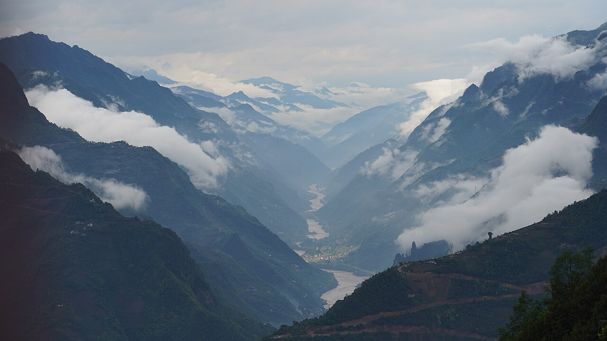

恩施土家族苗族自治州以恩施大峡谷、屏山「悬浮」峡谷、土司城闻名，是华中地区景观密度最高的自驾目的地之一。山路多弯，与重庆、湘西可组合成更大环线。
4–5 日经典：恩施市—土司城—恩施大峡谷—利川腾龙洞—屏山峡谷（鹤峰）—梭布垭石林。屏山峡谷需预约且对水位敏感，「悬浮船」照片需无风静水。
4–10 月适宜，夏季凉爽有「中国凉都」邻近的利川可延伸。土家吊脚楼、摔碗酒文化体验丰富，尊重少数民族习俗。
Itinerary
分日行程
第 1 天
抵达恩施 → 土司城
恩施土司城了解土家族历史，女儿城夜景与美食可选。休整备明日进山。
第 2 天
恩施大峡谷
一日游七星寨与云龙地缝，一炷香、绝壁长廊是标志。台阶多，穿舒适鞋，备登山杖。
第 3 天
利川腾龙洞
亚洲最大溶洞之一，洞内可乘电瓶车与看激光秀。夏季冷备外套。
第 4 天
屏山峡谷
鹤峰屏山峡谷需预约，透明水质与峡谷窄缝构成「悬浮」视觉。往返山路长，早出发。
第 5 天
梭布垭石林 → 返程
奥陶纪石林形态各异，若时间紧可与大峡谷日互换。下午返恩施离开。
Photo Essay
沿途影像





Highlights
核心景点
恩施大峡谷
与科罗拉多同属喀斯特峡谷，一炷香独立石柱是地标。云龙地缝清凉潮湿，与七星寨组合一日游。
屏山峡谷
「中国仙本那」，窄峡与清澈河水在特定光线下船如悬浮。对天气与水位敏感，需提前预约。
腾龙洞
利川巨型溶洞，洞口可停直升机。洞内温度低，与外部夏季形成强烈反差。
土司城
仿古土司宫殿建筑群，展示土家族历史与建筑。市区内，适合首日文化入门。
梭布垭石林
奥陶纪石林，形态如天然迷宫。比云南石林更小众，适合半日漫游。
Route
途经站点
1
恩施0
州府基地
机场、高铁可达。
2
大峡谷60
核心景区
建议一整天。
3
利川80
腾龙洞
可宿利川避暑。
4
屏山160
鹤峰
需预约，山路远。
Practical
实用信息
- 鄂西山多弯急，勿夜间赶路，雨天防落石。
- 大峡谷台阶多，老人儿童需评估体力。
- 屏山峡谷对水位敏感，出发前咨询景区是否开放。
- 尊重土家族、苗族习俗，摔碗酒等活动适量参与。
- 山区天气多变，备雨具与防滑鞋。
EV Tips
新能源出行提示
驾驶腾势 N7 等纯电 SUV 出发前，请特别注意以下事项：
- 恩施市区、利川有快充，屏山等偏远峡谷往返前务必满电。
- 长上坡增加能耗，下山利用回收但保持制动余量。
- 部分县道信号弱，下载离线地图。